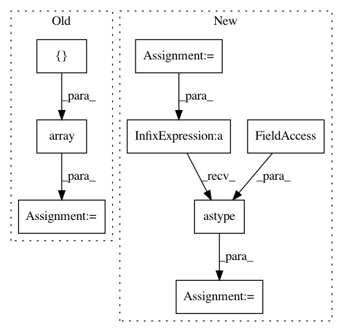

89fa23cb77746d36b4f1ff6cd4fcefbab18c7d70,src/sdk/pynni/tests/test_compressor.py,CompressorTestCase,test_torch_l1filter_pruner,#CompressorTestCase#,164
Before Change
If sparsity is 0.6, the expected masks should mask out filter 0,1,2, this can be verified through:
`all(torch.sum(mask2, (1, 2, 3)).numpy() == np.array([0., 0., 0., 27., 27.]))`
w = np.array([np.zeros((3, 3, 3)), np.ones((3, 3, 3)), np.ones((3, 3, 3)) * 2,
np.ones((3, 3, 3)) * 3, np.ones((3, 3, 3)) * 4])
model = TorchModel()
config_list = [{"sparsity": 0.2, "op_types": ["Conv2d"], "op_names": ["conv1"]},
{"sparsity": 0.6, "op_types": ["Conv2d"], "op_names": ["conv2"]}]
pruner = torch_compressor.L1FilterPruner(model, config_list)
After Change
`all(torch.sum(mask2, (1, 2, 3)).numpy() == np.array([0., 0., 0., 0., 0., 0., 125., 125., 125., 125.]))`
w1 = np.array([np.ones((1, 5, 5))*i for i in range(5)]).astype(np.float32)
w2 = np.array([np.ones((5, 5, 5))*i for i in range(10)]).astype(np.float32)
model = TorchModel()
config_list = [{"sparsity": 0.2, "op_types": ["Conv2d"], "op_names": ["conv1"]},
{"sparsity": 0.6, "op_types": ["Conv2d"], "op_names": ["conv2"]}]
In pattern: SUPERPATTERN
Frequency: 3
Non-data size: 8
Instances
Project Name: Microsoft/nni
Commit Name: 89fa23cb77746d36b4f1ff6cd4fcefbab18c7d70
Time: 2020-06-11
Author: 38930155+chicm-ms@users.noreply.github.com
File Name: src/sdk/pynni/tests/test_compressor.py
Class Name: CompressorTestCase
Method Name: test_torch_l1filter_pruner
Project Name: luispedro/mahotas
Commit Name: 93663c2cc8c0c8bc3c6f28c27679707305948c80
Time: 2010-05-11
Author: lpc@cmu.edu
File Name: tests/test_texture.py
Class Name:
Method Name: test_cooccurence
Project Name: vitchyr/rlkit
Commit Name: 9bdbb11cf27060e7847a87dcdf691dd6b96ce6df
Time: 2020-08-09
Author: 38036768+YangRui2015@users.noreply.github.com
File Name: rlkit/data_management/obs_dict_replay_buffer.py
Class Name: ObsDictRelabelingBuffer
Method Name: random_batch